Fifth Third Bank · Consumer online banking
Move money: redesigning online banking around what customers do most
People use their bank to save money and move money. At Fifth Third, moving money meant five different tools, most of them from outside vendors. I co-led a mobile-first redesign of online banking, used by customers more than a million times a day, that started with the hardest part: one simple way to move money, wherever it’s going.
- Role
- Co-lead designer (Senior UX Designer). The only full-time designer on the team, and later the design lead.
- Timeline
- 2015–2016, from discovery through the responsive redesign
- Scale
- 1 million+ customer logins a day
- Team
- Two lead designers, with product and engineering partners
- Methods
- Customer surveys, analytics, competitive review, card sorts, collaborative sketching, paper prototypes, usability testing, Pattern Lab

Why start with moving money
The redesign had plenty of visible reasons: an aging interface, a new technology platform, and the arrival of responsive web design. But underneath, a bank does two things for most customers. It holds their money, and it moves their money: paying bills, paying people, moving funds between accounts. If moving money was hard, nothing else about a new look would matter.
So the team was asked to look at every way a customer could move money online, and recommend what to build.
Five tools for one job
Over the years, each new way to move money had arrived as its own product. Internal transfers, external transfers, bill pay, person-to-person payments and web payments each had a separate path, most of them run by third-party vendors. Customers had to know which tool did what before they could start, and each one looked and behaved differently.
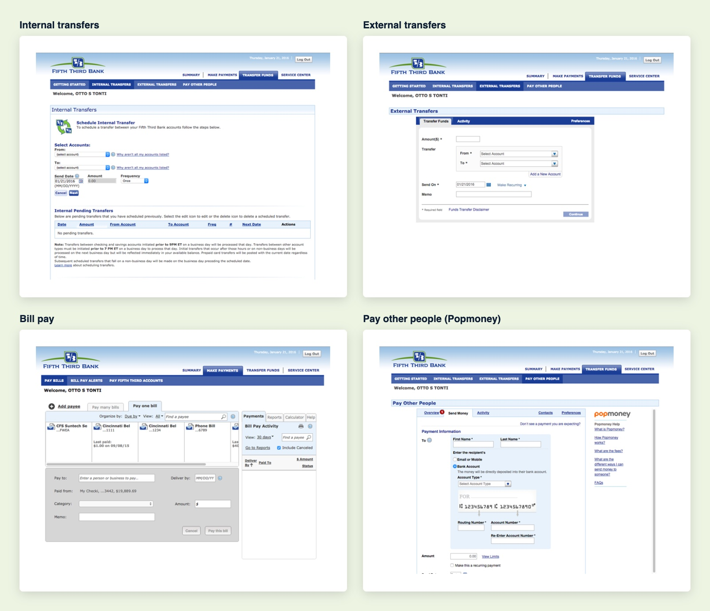
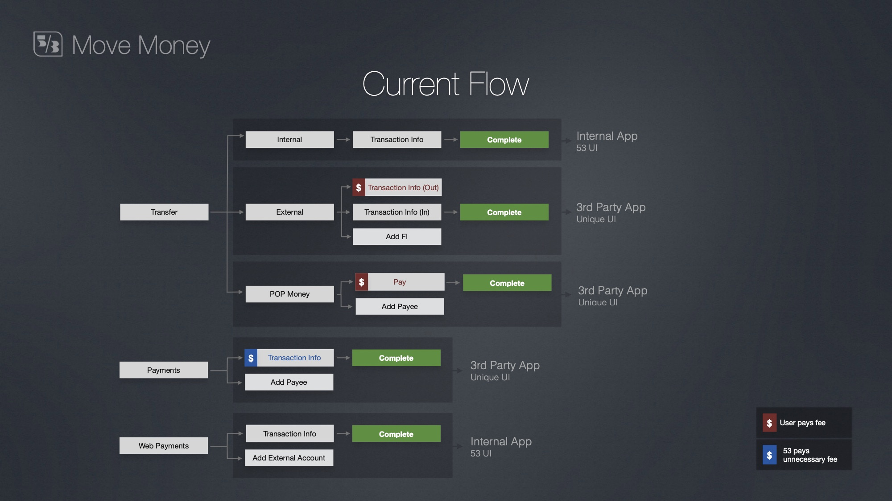
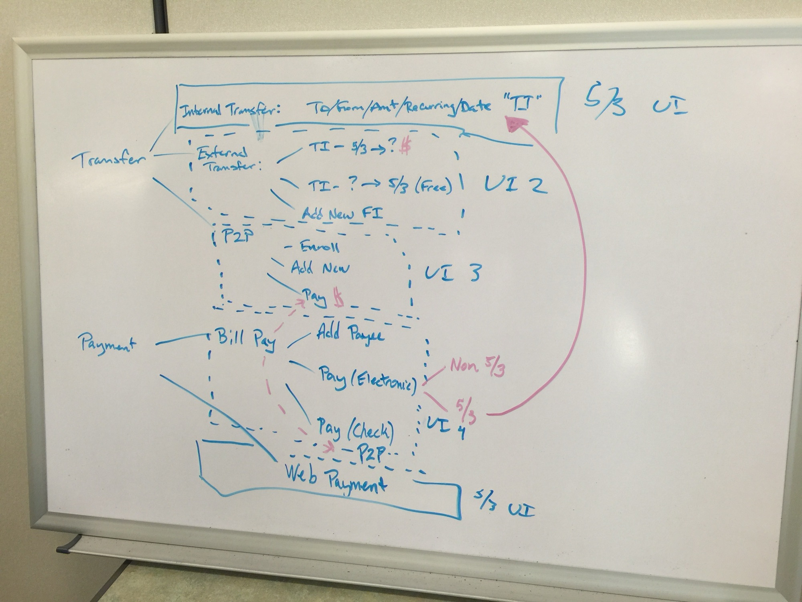
Discovery: how customers think about money
We combined customer surveys, usability results from the existing site, site analytics and a competitive review of six banks’ responsive sites. Then we ran card sorts to learn how customers group the places their money goes.
We worked in a four-month series of quick design sprints and story spikes, each turning around discovery, concepts and testing for a piece of moving money in days, not months.
The card sort changed the question. Customers didn’t sort by product or by system. They sorted by who the money was going to: their own accounts, their bills, and people like “Grandma,” “my yoga instructor” or “the guy who mows my lawn.” Whether a payment ran through bill pay, a transfer service or a person-to-person vendor didn’t matter to them at all.
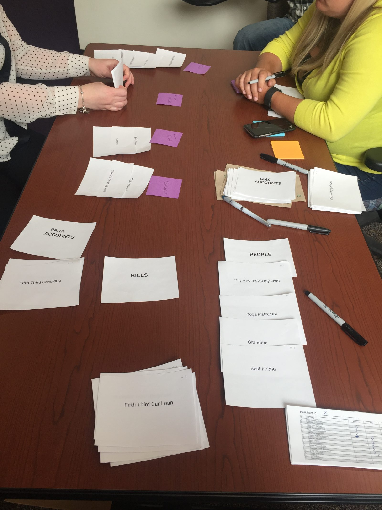
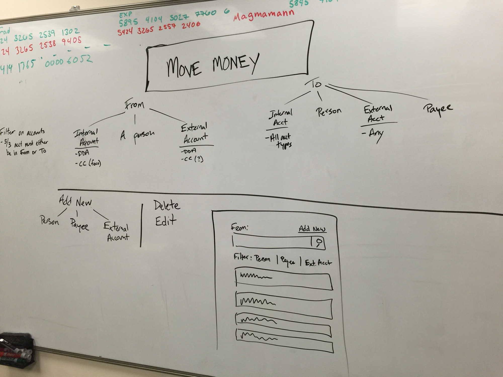
The big decision: wrap the vendors, or own the experience
The quicker option was to keep every vendor and frame their screens inside the new site. We laid out both options side by side for leadership:
The two options we presented
| Frame the vendor tools | Build one experience Fifth Third owns |
|---|---|
| Cheaper and potentially faster to market | More work up front across several teams, best done in stages |
| None of the vendor tools were responsive, so the new site would wrap old, desktop-only screens | Mobile first, with the same behavior on the website and in the apps |
| An inconsistent look and feel, and every vendor’s feature bloat | One consistent flow, whatever system is behind it |
| Dependent on vendors to take our feedback, and on their release schedules | Fifth Third controls the experience, and owns the data to personalize it |
We recommended owning it. The backend could stay complicated. That was Fifth Third’s problem to solve, not the customer’s. The recommendation was approved, and moving money became the first flow designed for the new platform.
Customers choose who the money is going to. The system figures out how to get it there.
One flow for everything
Every kind of money movement used the same steps. The first question is where the money is going, in plain language: another account, this account, a business, or a person. After that the flow is always the same.
The Move Money flow
- ToAnother account, this account, a business or a person, each with a one-line description.
- FromThe customer’s accounts, with balances shown next to each name.
- Amount and dateAmount, send date and frequency, so one-time and recurring use the same screen.
- ConfirmEvery detail on one screen, each with an edit link.
- DoneA clear confirmation and a way back to accounts.
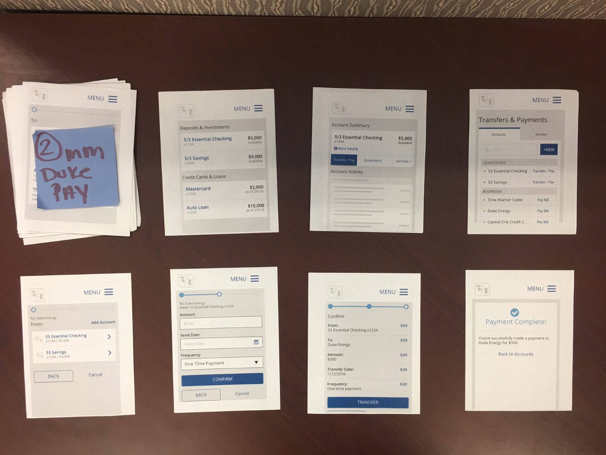
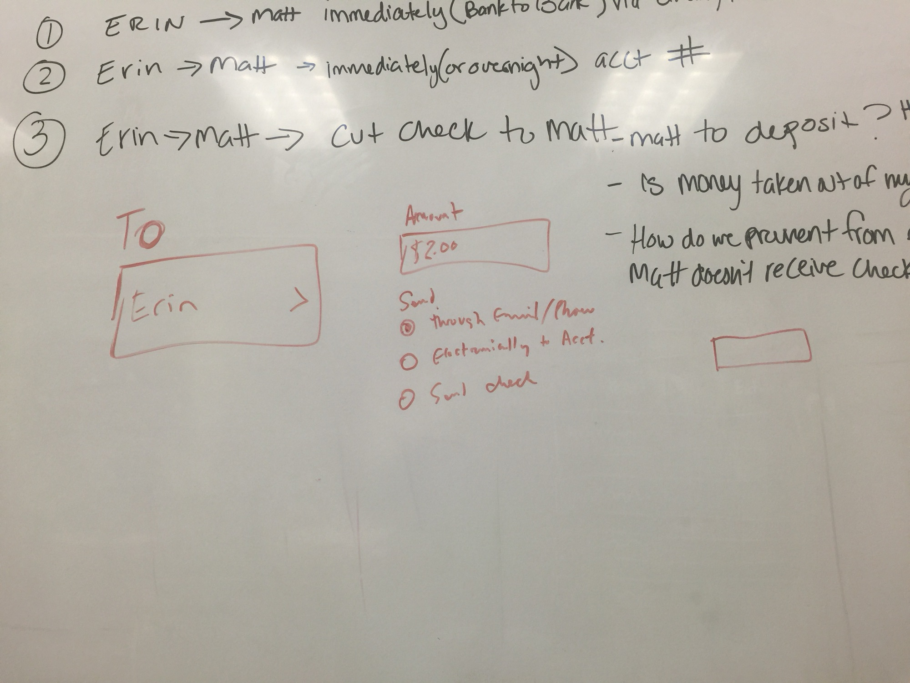
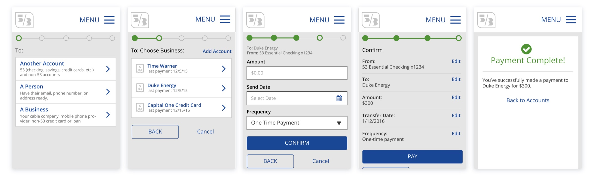
Mobile first, built from patterns
The redesign came at a turning point in web design. Responsive sites were new, and it was finally practical to design for the phone first and scale up. We also stopped designing pages one at a time. We rebuilt online banking from its core components, using Atomic Design as our guiding system. The other lead designer and I built and maintained it in Pattern Lab, a pattern library that assembles pages from small, reusable pieces: atoms like buttons and icons, molecules like a labeled field, up to full page templates. Each sprint, we researched, built and tested designs in the browser.
That gave engineering working, responsive markup instead of static mockups, and it kept every flow consistent as the site grew.
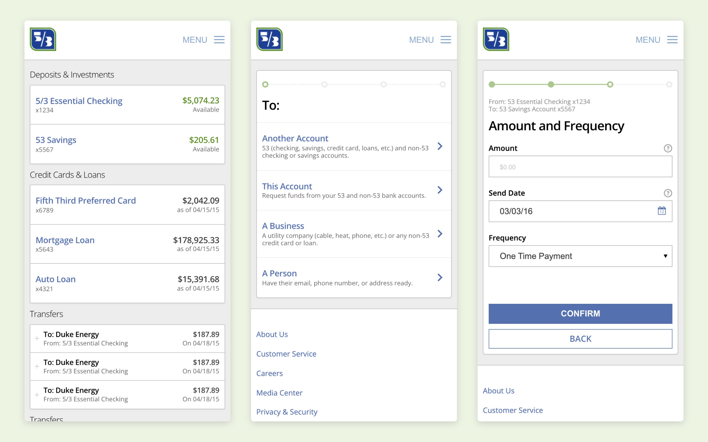
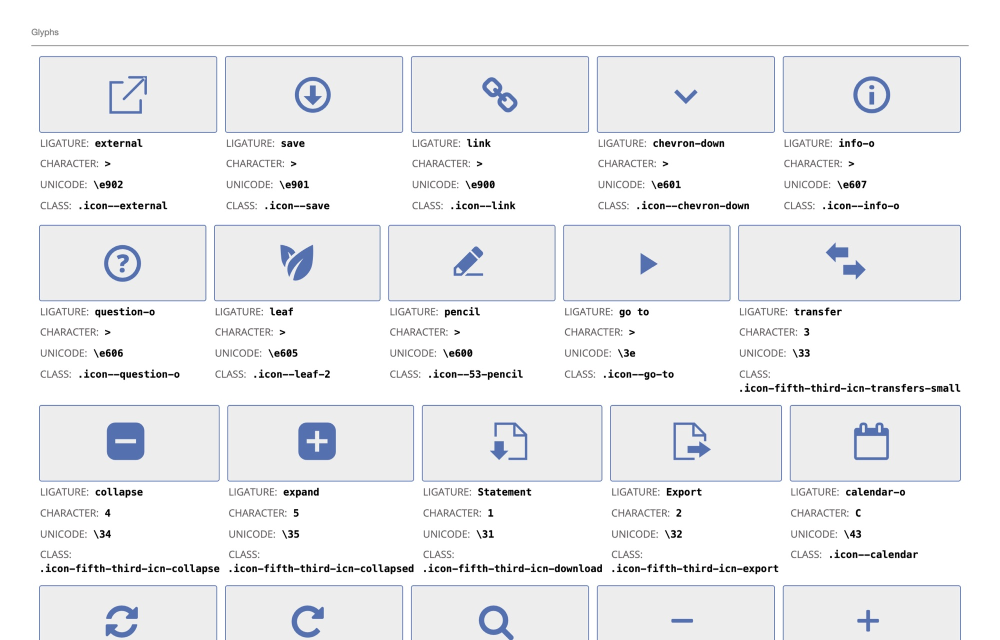
What testing told us
We tested the redesign with six customers, side by side with the existing site. The overall reaction was consistent:
“More basic, which is good.” “Less intimidating.” “Less… just… stuff.”
- Moving money between their own accounts worked. Participants moved through internal and recurring transfers quickly, liked seeing balances next to each account, and liked the confirmation screen. One called it “big, clear.”
- Paying another bank’s account was the hard concept. Several participants said they would just go to the other bank’s website, and some didn’t look for the option at all. We made it more prominent and changed the labels to say plainly that the account was at another bank.
- Small things got in the way. A search box above short account lists confused people, so we removed it. Customers also kept asking for text message alerts, which fed directly into the next round of work.
Before: internal transfers, one of five tools
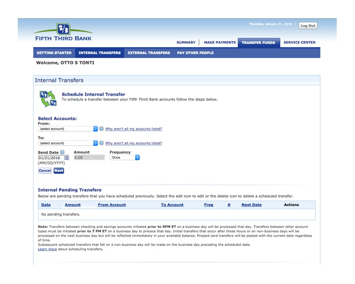
After: one flow for every way to move money
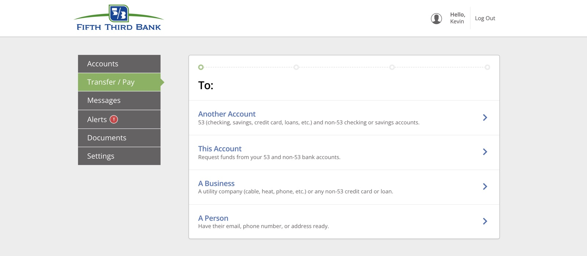
Outcome
Move Money shipped as one flow for every way a customer could move money, on any screen size. Customers found it far simpler, and customer satisfaction with the redesign was good. Because the experience belonged to Fifth Third instead of a vendor, the team could keep building on it. Notable follow-on work included:
- Smarter alerts, including the text message delivery customers asked for in testing
- Stronger online security for login and devices
- Zelle person-to-person payments, added to the same flow
I was eventually left in charge of design for online banking. The pattern library became the starting point for the bank’s design system, which I went on to found, with designers and UX engineers serving both web and mobile.
Reflection
- Organize around the customer’s question, not your org chart. Five tools existed because of how the bank bought software. The card sort showed customers think about who they’re paying, and that one insight simplified everything.
- The decision mattered more than the screens. The most important design work was making the case to own the experience. Wrapping the vendors would have locked the old complexity into a new frame.
- Systems outlast projects. Screens change. The pattern library, and the habit of designing in reusable parts, carried forward into a design system.